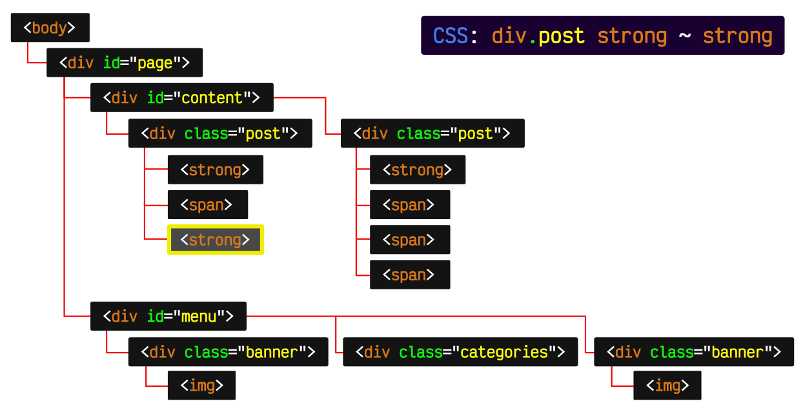

Conociendo todo sobre Box Model
Es seguramente la característica más importante del lenguaje de hojas de estilos CSS, ya que condiciona el diseño de todas las páginas web. El modelo de cajas es el comportamiento de CSS que hace que todos los elementos de las páginas se representen mediante cajas rectangulares.

Informate y aprende de Selectores de CSS
Un selector CSS es la primera parte de una regla CSS. Es un patrón de elementos y otros términos que indican al navegador qué elementos HTML se seleccionan para aplicarles una regla que incluye los valores de las propiedades CSS. El elemento o los elementos seleccionados por el selector se denominan sujeto del selector.
